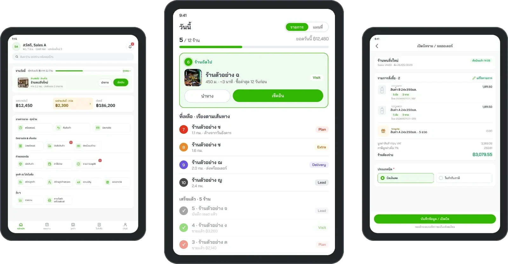
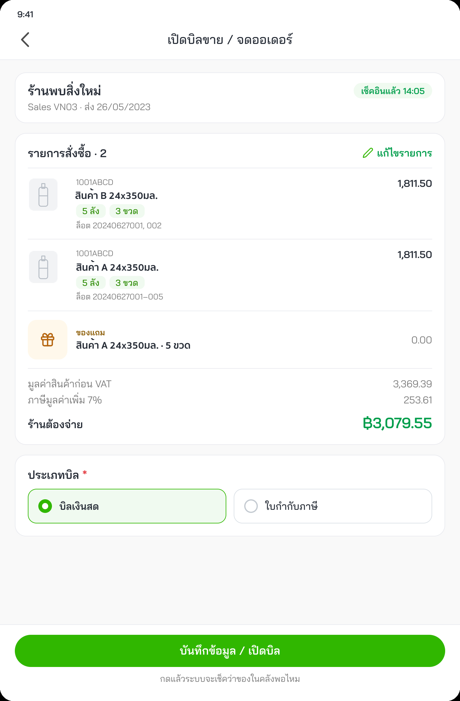
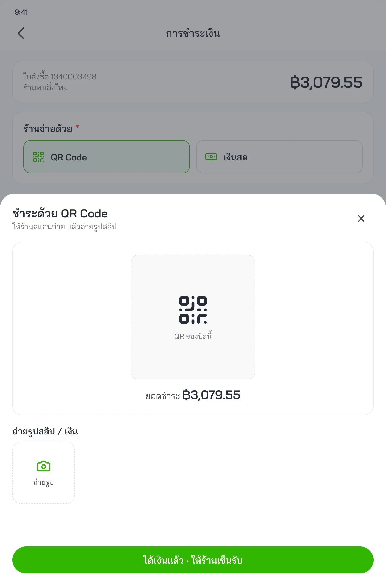

Field-sales CRM & Sales-operations Platform
แอปบนแท็บเล็ตของทีมขายผู้จัดจำหน่าย B2B ที่ทำแทนระบบขายเดิม ใช้ตั้งแต่วางแผนเข้าร้าน เช็กอิน เปิดบิล จนรับเงิน โดยเชื่อมกับ ERP เดิม

ภายใต้ NDA หน้าจอทั้งหมดวาดใหม่สำหรับ case study นี้ ชื่อลูกค้า ชื่อระบบ โลโก้ และข้อมูลจริง เปลี่ยนเป็นข้อมูลสมมติ
ปัญหาที่ต้องแก้
- 01ตรวจไม่ได้ว่า Sales ไปถึงร้านจริงSales Manager ต้องตามเช็กเองว่า Sales ไปร้านตามแผนไหม
- 02รู้ว่าของไม่พอช้าเกินไปERP ตรวจสต็อกตอนเปิดบิล ถ้าไม่พอ Sales ต้องแก้รายการต่อหน้าเจ้าของร้านก่อนรับเงิน
- 03มองไม่เห็นว่าบิลค้างอยู่ขั้นไหนหลังบ้านแยกไม่ได้ว่าบิลยังรอเลขจาก ERP หรือร้านยังไม่จ่าย
- 04กฎการขายอยู่ในความจำของพนักงานทีมเปลี่ยนคนบ่อย คนใหม่ต้องเรียนกฎการขายให้ทัน
- R1เช็กอินก่อนขายสร้างรายการขายได้หลังเช็กอินที่ร้านเท่านั้น
- R2ได้เลขบิลก่อนรับเงินบิลต้องได้เลขจาก ERP ก่อน จึงรับชำระได้
ใครใช้ระบบ และต้องการอะไร
Sales เป็นคนเปิดบิล แต่อีก 3 ฝ่ายรอข้อมูลจากบิลนั้น มี 2 ทีมขาย คือ Cash Van ที่ขายและเก็บเงินที่ร้าน และ Sales Credit ที่เปิดบิลแล้วส่งของทีหลัง
เคสนี้เล่าตาม flow ของ Cash Van เพราะขายและรับเงินจบที่ร้าน
- 1Sales ต้องขายและรับเงินจบที่ร้านใช้แอปทั้งวัน ต่อหน้าเจ้าของร้าน บางช่วงเน็ตไม่เสถียรปัญหา 02ปัญหา 04
- 2Sales Manager ต้องรู้ว่าทีมไปร้านตามแผนไหมดูทีม และอนุมัติคำขอของ Salesปัญหา 01
- 3หลังบ้านต้องได้บิลที่ถูกต้องเข้า ERPรอข้อมูลจากแอป และต้องรู้ว่าบิลค้างอยู่ตรงไหนปัญหา 03
- 4Audit ต้องตรวจย้อนได้อนุมัติการยกเลิกบิลขั้นสุดท้าย
ทั้ง 3 ปัญหาหลักเกิดจากบิลใบเดียวที่หลายฝ่ายเห็นไม่ครบ ถ้าบิลผูกกับร้าน ถูกตามกฎตั้งแต่เปิด และบอกสถานะได้ ทุกฝ่ายก็ทำงานต่อได้
- ปัญหา 01ตรวจไม่ได้ว่า Sales ไปถึงร้านจริงผูกบิลกับร้านที่เช็กอินเปิดบิลได้หลังเช็กอินเท่านั้น หัวหน้าจึงเทียบแผนกับการเยี่ยมจริงได้
- ปัญหา 02รู้ว่าของไม่พอช้าเกินไปเห็นสต็อกตั้งแต่ตอนเลือกถ้า ERP ปฏิเสธ แก้แค่รายการที่ขาด ไม่ต้องเลือกใหม่ทั้งบิล
- ปัญหา 03มองไม่เห็นว่าบิลค้างอยู่ขั้นไหนให้สถานะบิลบอกทุกขั้นแยกช่วงรอ ERP และรอ sync ออกจากรอร้านจ่าย
บิลถูกต้องตามกฎตั้งแต่เปิดที่ร้าน และตรวจย้อนได้ว่าไปร้านไหน รับเงินเท่าไร
ก่อนออกแบบหน้าจอ ต้องรู้ก่อนว่ากฎจาก ERP บังคับอะไรในแต่ละขั้น จึงไล่ Workflow ต่อ ↓
ไล่ Workflow: ขายหนึ่งร้าน ผ่าน 4 ช่วง
ดูว่าแต่ละช่วงต้องใช้ข้อมูลอะไร มีกฎอะไรจาก ERP และตรงไหนที่ Sales ไปขั้นถัดไปไม่ได้ เช่น สต็อกไม่พอ หรือเครดิตไม่ผ่าน
- 1วางแผนSalesเปิดแผนงานวันนี้ ร้านเรียงตามเส้นทางปัญหา 01หัวหน้าตรวจไม่ได้ว่าไปร้านจริง
- 2เข้าร้านSalesเช็กอินด้วย GPS เมนูขายจึงเปิดBusiness Ruleสร้างรายการขายได้หลังเช็กอินเท่านั้น
- 3ขายและเปิดบิลSalesเลือกสินค้าและโปรโมชัน แล้วส่งบิลให้ ERP ตรวจสต็อกและเครดิตปัญหา 02รู้ว่าของไม่พอตอนส่งบิล
- 4ปิดออเดอร์Sales · หลังบ้านได้เลขบิลแล้วรับเงิน แนบหลักฐาน และพิมพ์ใบเสร็จBusiness Ruleรับเงินได้หลัง ERP ออกเลขบิลปัญหา 03ไม่รู้ว่าบิลรอ ERP หรือรอเงิน
หัวหน้าไม่ต้องตามเช็กเองว่า Sales ไปร้านจริงไหม
เดิมSales Manager ต้องตามเช็กเองว่า Sales ไปร้านตามแผนไหม และคนใหม่ต้องจำว่าต้องทำอะไรก่อน
- ทุกบิลผูกกับร้านที่เช็กอินSales Manager เทียบแผนกับการเช็กอินจริงได้จากแอปช่วยลด การตามเช็กเองว่า Sales ไปร้านตามแผนไหมหลักการ · Visibility of System Status (Nielsen ข้อ 1)
- แผนงานเรียงร้านตามเส้นทางร้านถัดไปอยู่บนสุด พร้อมปุ่มนำทางและเช็กอิน (ตาม requirement)ช่วยลด การหาว่าวันนี้ต้องไปร้านไหนก่อนหลักการ · Visual Hierarchy
- ก่อนเช็กอิน หน้าร้านมีปุ่มเดียวเมนูขายซ่อนไว้จนเช็กอิน และใต้ปุ่มบอกว่าเช็กอินแล้วใช้เมนูไหนได้ (ตาม requirement)ช่วยลด การไล่หาว่าต้องกดอะไรก่อน โดยเฉพาะคนใหม่หลักการ · Constraints (Don Norman) · Hick's Law
- Home เรียงตามช่วงงานงานวันนี้อยู่บนสุด 3 เมนูหลักอยู่แถบล่าง ที่เหลือแบ่ง 5 กลุ่มตามช่วงงานช่วยลด การจำว่าเมนูอยู่ตรงไหนหลักการ · Recognition rather than Recall (Nielsen ข้อ 6)
สรุปในประโยคเดียวหัวหน้าเคยต้องตามเช็กว่า Sales ไปร้านจริงไหม ดังนั้นทุกบิลจึงผูกกับร้านที่เช็กอิน และก่อนเช็กอินมีแค่ปุ่มเดียว เพื่อให้หัวหน้าเทียบแผนกับการเยี่ยมจริงได้ และคนใหม่ไม่ต้องจำว่าต้องทำอะไรก่อน
รู้ว่าของไม่พอตั้งแต่ตอนเลือก และแก้แค่รายการที่ขาด
เดิมERP ตรวจสต็อกตอนเปิดบิล ถ้าไม่พอ Sales ต้องแก้รายการต่อหน้าเจ้าของร้านก่อนรับเงิน

- ไม่ต้องเลือกใหม่ทั้งบิลเห็นสต็อกตั้งแต่ตอนเลือก และถ้า ERP ปฏิเสธ รายการเดิมยังอยู่ (ตัดสินใจร่วมกับ BA)ช่วยลด การเลือกสินค้าใหม่ทั้งบิลต่อหน้าเจ้าของร้านหลักการ · Error Prevention (Nielsen ข้อ 5)
- สต็อกจาก ERP อยู่ในแต่ละรายการใส่เกินจำนวนที่มีไม่ได้ช่วยลด การรู้ว่าของไม่พอตอนส่งบิลหลักการ · Error Prevention (Nielsen ข้อ 5) · Constraints
- รายการที่ไม่พอขึ้นบนสุดERP ตรวจซ้ำตอนส่ง ถ้าไม่พอ จอยกรายการนั้นขึ้นบนสุด แก้แล้วส่งใหม่ได้ช่วยลด การไล่หาว่ารายการไหนมีปัญหาหลักการ · Help users recognize, diagnose, and recover from errors (Nielsen ข้อ 9)
- คำบนจอเป็นภาษาของ Salesเช่น "ของในคลังไม่พอ ยังเปิดบิลไม่ได้" แทน "สินค้าในคลังไม่เพียงพอ"ช่วยลด การตีความข้อความจากระบบหลักการ · Match between System and the Real World (Nielsen ข้อ 2)
สรุปในประโยคเดียวSales เคยรู้ว่าของไม่พอตอนส่งบิล ต่อหน้าเจ้าของร้าน ดังนั้นหน้าเปิดบิลจึงแสดงสต็อกตั้งแต่ตอนเลือก และถ้า ERP ปฏิเสธก็ยกรายการที่ขาดขึ้นบนสุด เพื่อให้แก้แค่รายการนั้นแล้วส่งใหม่ได้ทันที
รู้ว่าบิลรอ ERP รอ sync หรือรอร้านจ่าย
เดิมหลังบ้านแยกไม่ได้ว่าบิลยังรอเลขจาก ERP หรือร้านยังไม่จ่าย

- รู้ว่าบิลอยู่ขั้นไหนสถานะบิล: เปิดบิล → รอดำเนินการ → รอชำระ → ชำระแล้ว (แยกช่วงรอ ERP ร่วมกับ BA)ช่วยลด การโทรถาม Sales ว่าบิลถึงไหนแล้วหลักการ · Visibility of System Status (Nielsen ข้อ 1)
- ทำงานต่อได้ตอนเน็ตไม่เสถียรดูแผน ดูข้อมูลร้าน เช็กอิน และสร้างออเดอร์ได้ แล้ว sync ทีหลัง ส่วนรับเงินต้องรอได้เลขบิลก่อนช่วยลด งานที่ค้างเพราะเน็ตหลุดหลักการ · Error Prevention (Nielsen ข้อ 5)
- ป้ายบอกรายการที่รอ syncเห็นว่ากำลัง offline และรายการไหนยังไม่ส่งช่วยลด ความไม่แน่ใจว่าบิลส่งไปแล้วหรือยังหลักการ · Visibility of System Status (Nielsen ข้อ 1)
- เลขอ้างอิงชั่วคราวระหว่างรอ ERPบิลมีเลขให้อ้างถึงได้ก่อนได้เลขจริงช่วยลด การเรียกบิลไม่ถูกระหว่างรอหลักการ · Recognition rather than Recall (Nielsen ข้อ 6)
- รับเงินในขั้นเดียวเลือกวิธีชำระ แนบสลิปถ้าจ่ายผ่าน QR และเซ็นรับในขั้นเดียวช่วยลด การสลับหน้าหลายครั้งต่อหน้าเจ้าของร้านหลักการ · Fitts's Law · ลดขั้นตอน
สรุปในประโยคเดียวบิลต้องได้เลขจาก ERP ก่อนรับเงิน และบางครั้งเน็ตไม่เสถียร ดังนั้นสถานะบิลจึงแยกช่วงรอ sync และรอ ERP ออกจากรอร้านจ่าย เพื่อให้ Sales และหลังบ้านรู้ว่าบิลอยู่ขั้นไหน โดยไม่ต้องโทรถามกัน